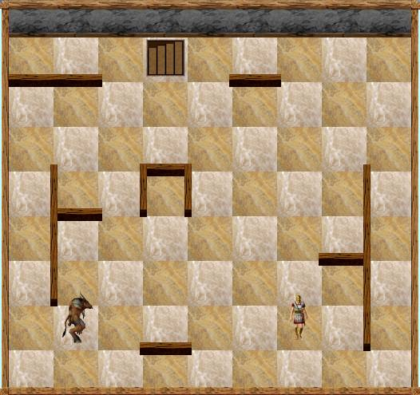
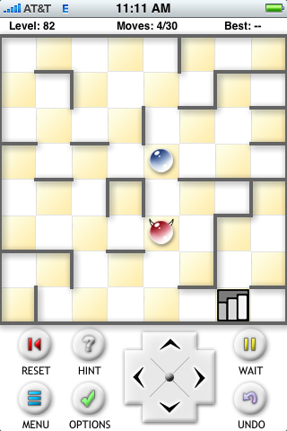
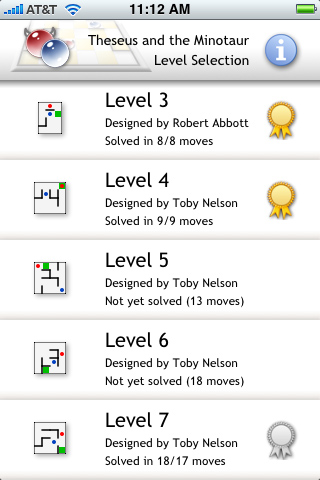
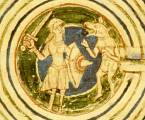

The first way to play the Theseus mazes:Here is the applet by Toby Nelson. If you haven’t played the game yet, you can give it a try here.
The key to solving these mazes is to realize that the Minotaur follows a rigid program. He doesn’t do what you would do if you were a Minotaur. He doesn’t look ahead more than one turn. And, most importantly, he will choose a horizontal move before a vertical move. The first three mazes are just training mazes, then 4 through 10 get to be interesting. Big hint for maze 1: move left, then move right. Hint for maze 2: go right 4, up 1, down 3, left 1. Hint for maze 3: at one point Theseus must delay. To do this, type D. Maze 10 is way too difficult. When you’re ready to give up, you might first check out the solution here. |
The second way to play the mazes:In December of 2007, a new version of Theseus and the Minotaur was published. It is a download for your computer screen and has 87 levels, most of them new. The picture below shows level 55 (which you might recognize, because it’s the same as Maze 9 in the applet above). |

|
Other features of the game are an unlimited undo facility and solutions for the levels. It also has an Editor that lets you design your own layout. You can then have the program test your layout and indicate the solution. I had a lot of fun with that feature, and I used it to create two new layouts. They were added to a later release of the program and became levels 20 and 85. By the way, when you buy the game you are entitled to all further releases for free. The third way to play the mazes:During October, 2008, the mazes were published as an application for the iPhone and iPod Touch. It has the same 87 levels that are in the Kristanix large screen version. If you have an iPhone or iPod, this is probably the best way to play the mazes. When you have a few minutes to relax, you can sit back, have a cup of coffee, and solve one or two of the levels. After about six months, you will have solved all the levels. Two views of the application are shown here: |
|
 |
 |
|
This was put together by Jason Fieldman, who did the programming. He also has a good artistic sense and was able to draw symbols that made the mazes look good on the small screen. You might take a look at this page on Jason’s web site. He has more information about the program and pointers to reviews. This link will take you to a page on the iTunes App store where you can buy Theseus and the Minotaur (for $3.99). The link may be a little slow because it takes you through a lot of Apple’s software. If you go directly to the iTunes app store, you can search for the game. Its title is Theseus. And this link will take you to the page where you can download Theseus Lite, the free version with a sampling of levels from the full version. By the way, I noticed that Bob Hearn’s Subway Shuffle collection of puzzles is on the iPhone, and I heard of other projects to put puzzle games on the iPhone. This might be a trend. In general, puzzle games may be moving from computer screens to small hand-held devices. And the preferred devices seem be the iPhone and iPod. I would welcome this trend, because puzzle games work well on a small screen. The usual dumb shoot-em-ups do not work on a small screen. To read more about this trend, see Puzzling iPhone. History:I wanted to present a history of this maze, which is now almost twenty years old. However, before I wrote anything, I discovered (while idly Googling on “Theseus and the Minotaur”) that there is a column by Tony Delgado which already gives the complete history. Not only that, but he has insights I don’t have, since he knows more about puzzles on the Internet. And finally, his writing is better than mine (I hate to admit that). So, instead of me writing the history, I thought I would send you to Delgado’s column. It was posted back in February of 2007, so when you return here, you can read the later updates on the maze. Here, then, is Tony Delgado’s column on the Theseus maze. Delgado wrote about mazes 14 and 15 in Toby Nelson’s applet. These are no longer in the applet. Maze 14 is my original maze, which first appeared in my book Mad Mazes. A print version is here and it is the second-to-last maze in the Kristanix or iPhone version. Maze 15, the dread maze 15, is Toby’s most complex maze. A print version is here and it is the last maze in the new versions. In October, 2008, there were 87 layouts to the maze. Of these, 61 were created by Toby Nelson’s program, 13 were created by a program written by Claude-Guy Quimper, and 13 were created by me, the only human creating layouts. Since then I have created one new layout, which we inserted as Level 33 1/2. The fraction was used so we wouldn’t have to revise the numbering of the other levels. Jason Fieldman is also adding user-created levels to the end, so the number of levels continues to grow. This site has two other sections about the Theseus mazes. The first is further notes, which was posted in 2000. It has the early history of the mazes, and it has a discussion with Toby Nelson about the workings of his program that generated his layouts. The other section gives a long mythology that explains how Theseus got into a maze with a mechanical Minotaur. The publisher of Mad Mazes thought it was too long and boring, so he didn’t include it in the book. Most people agreed with that assessment, but some thought it was great, so I was able to get the mythology published in a British magazine. I also included it here. And by the way, Theseus and the Minotaur now have their own entry on Wikipedia. I have no idea who wrote this. Creating new layouts:If you enjoy solving the Theseus mazes, would you like to create a layout yourself? Probably not, but if you do, you can use the Editor section of the Kristanix program to put it together. If you don’t have the Kristanix program, you can use the Theseus solver on Yoah Bar-David’s site. If your layout works well, send us a screen shot of it. The best place to send it is to Jason Fieldman’s Discussion Forum about the game. If we like your maze, we’ll try to include it in a future release of the Kristanix or iPhone programs. This will bring you fame (but no fortune). Both of the programs give the name of the designer of each level. |
|
 | The picture on my home page shows Theseus battling the Minotaur in the Labyrinth. It was taken from an illumination in a 12th century manuscript. Here is the complete illumination, and here is more information. |
|
|
Games contributor Robert Abbott is a pioneer in the genre of logic mazes, which add layers of complexity to the standard linear point-to-point maze. One of his most durable designs is Theseus and the Minotaur, which has evolved over several iterations, including pen-and-pencil, computer, Java, and the game Mummy Maze (PopCap), which belatatedly acknowledged its debt to Abbott’s original concept. It now finds a welcome home in the App store with a very simple, clean visual style and control system. Developed by Jason Fieldman, the App offers 17 levels in the free Lite version and almost 90 in the full $4 version. The goal is to maneuver “Theseus” (a blue ball) to the exit by first trapping the “Minotaur” (a red ball with horns) in one of the niches on the map. Since the Minotaur is always closing on Theseus with two moves to Theseus’s one, the trick is to find ways to trap him with his own rules of movement, which favor horizontal motion over vertical. Although the rules are easy to understand, the puzzles get larger and increasingly complex, and some are real mind-benders. There are many maze games in the App stores, including rolling ball games that use the device’s motion control to emulate tilting mazes, but Theseus is the most clever. It’s a classic design done with a solid implementation. |
Theseus and the Android:No, Theseus is not doing battle with the fearsome Android monster. Instead, Theseus has finally (October, 2010) become an app for the Android phones. Carl-Petter Bertell programmed the app, and he has information about it on his web site. Carl-Petter also wrote a fascinating blog post: My Year as an Amateur Android Game Developer. It has only a little about Theseus. Instead it is mostly about the app business, and about programming in general. He begins by describing a large business system he was working on which was starting to fall apart. Bertell then thought he would have more fun, and make more money, by developing an app. Because he lives in Finland, he figured he would have to register as a business and even collect VAT taxes. That was becoming a bureaucratic nightmare, but he found he could bypass all these problems by hooking up with a guy in Silicon Valley. He was able to finish the app in less than a year. And, did he really have fun? did he make any money? For the answer to those questions you’ll have to read the blog. |
{kind=link}